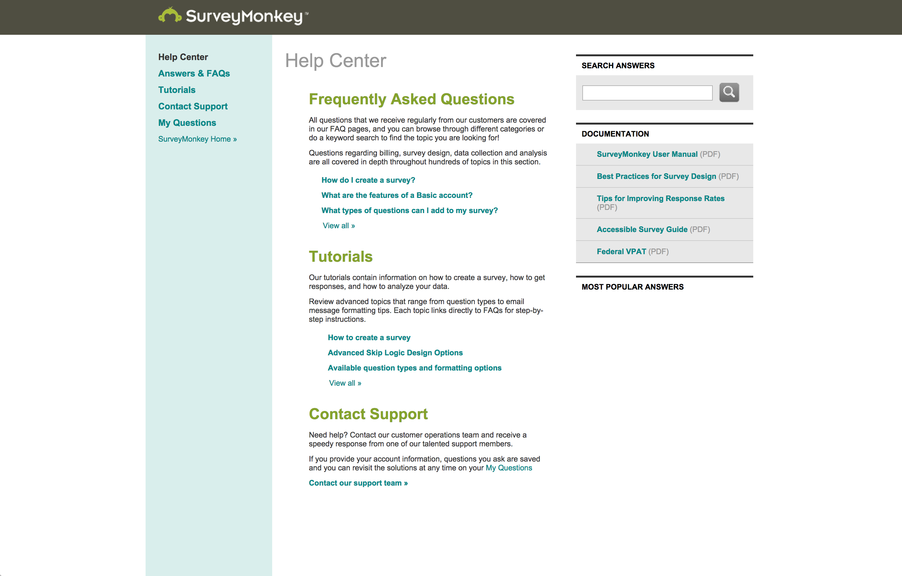
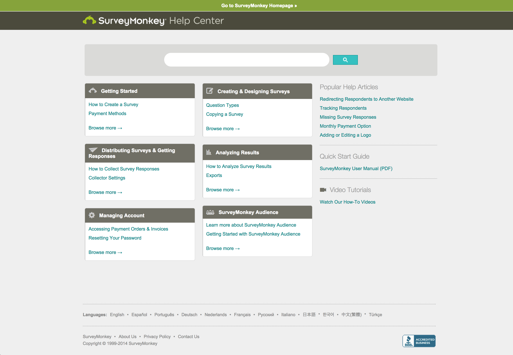

Redesigning the SurveyMonkey Help Center
The problem
The SurveyMonkey Help Center houses over 6000 help topics. Customers need to be able to find help quickly. The help center only supported users that Googled their topic, not users that browsed topics from in-product links.
During a CRM migration, the team decided to redesign a site that wasn’t working. I headed the redesign with one collaborator and one part-time deloper. Here are some of the problems I set out to fix.
Little topic visibility for our most common search terms
I aimed to maximize real estate for the most common search strings, balanced with business needs. For example, many customers searched for help on how to get survey responses, but almost no browsing path would lead to this topic.
Promoting self-service over contacting support
Our site made it easier to contact support than to find the right topic. The site prominently featured options to contact support in two areas. Since common topics were obscured by a lack of navigation, support received a steady stream of easily self-remedied questions.
No meaningful navigation elements
Users find meaning in groups. If they see a set of similar topics that doesn’t match their question, they know they can move onto another set of headings. Logical and navigable information groups help customers more quickly discover what they’re looking for. There were no meaningful navigation element groups – in other words, the site grouped things in formats (PDF) versus utility and customer mental models.

The solution
The project came with a high investment. Migrating pages and topics isn’t easy, and assigning new categories and tags to moving targets requires significant effort. For this reason, I invested early with some user research.
Card sorting tests
Before I assigned new categories to 6000+ articles, users with little exposure to the help center (SurveyMonkey users outside the company) participated in an open card sorting exercise. Using the top 30-40 viewed articles, 20 respondents organized topics into categories of their choosing. Using overlap between respondents, I planned the first IA iteration.
Tree tests
After an initial draft for new IA, SurveyMonkey users vetted the model again. Users completed a dozen tree tests to see if they could successfully locate topics based on the IA model. After some tweaks, I arrived on a hierarchy validated twice by users.
Exposing the high-demand topics for each category
I identified the top drivers to support, and also the top search keywords from Google and the help site. I featured these topics on the homepage to reduce the most common support inquiries.
I also solved a few odds and ends, like user confusion about clicking the SurveyMonkey header. We added a link to go back to SurveyMonkey home, so it was obvious where users would go. We saw clicks to the header drastically reduce after the addition of this link.
To measure success, I used a combination of metrics. Higher traffic to some articles occurred with increased homepage prominence, and support cases for these topics correspondingly decreased. The percentage of support contacts (how many people that filed a ticket when visiting the homepage) decrease by a few percentage points.

Lessons learned
This was an interesting problem to solve, and I’m pleased with the methodology I used to define the IA. We worked closely with support to identify drivers quanitatively and qualitatively, and regularly presented findings and progress to high-level executives.
Things I’d do differently in the future:
- More iteration on the actual design. I’m confident in the final IA and validation exercises, but I’m not positive the new design optimally supports this.
- Worked harder to ensure all stakeholders had defined success metrics before, during, and after implementaion. More metrics would help justify additional development.